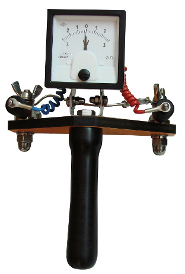
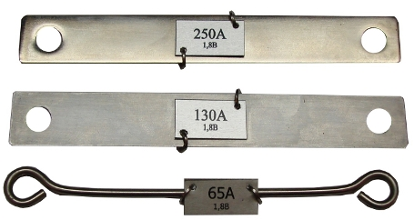
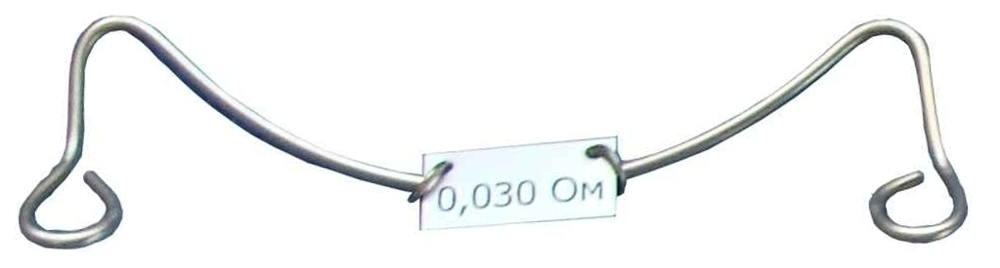
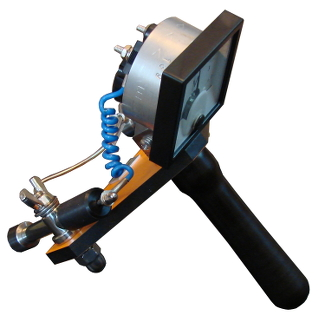
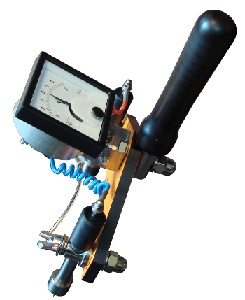
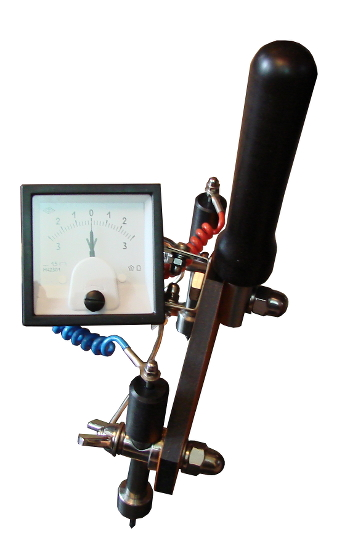

Емкости аккумуляторов, контролируемых нагрузочной вилкой НК-500 в зависимости от допускаемого изготовителем максимального тока разряда, или установленного эксплуатирующей организацией режима (тока) разряда, приведены в таблице
|
Установленный изготовителем аккумулятора или эксплуатирующей организацией ток разряда, А |
Маркировка сменного сопротивления вилки |
||
|
«65А» |
«130А» |
«250А» |
|
| 0,1Сном (10-часовой режим разряда) |
650...720 Ач
|
1300...1430 Ач
|
2500...2750 Ач
|
| 0,2Сном (5-часовой режим разряда) |
320...350 Ач
|
650...715 Ач
|
1250...1390 Ач
|
| 0,5Сном (2-часовой режим разряда) |
130...140 Ач
|
260...286Ач
|
500...555 Ач
|
| 1Сном (1-часовой режим разряда) |
65...72 Ач
|
130...143 Ач
|
250...280 Ач
|
Условия эксплуатации вилки нагрузочной НК-500:
Температура от минсу 50 до плюс 60 °С, относительная влажность 95 % при температуре плюс 35 °С.
С помощью нагрузочной вилки НК-500 можно измерить:
- напряжение аккумулятора без нагрузки (э.д.с. аккумулятора);
- напряжение аккумулятора под нагрузкой. При этом имеется возможность ступенчатого выбора пользователем величины тока нагрузки в зависимости от требований предъявляемых к аккумулятору.
Нагрузочная вилка, модель НК-500, обеспечивает ступенчато- настраиваемый ток разряда. В стандартной комплектации поставляются сменные нагрузочные сопротивления на токи 65 А, 130 А, 250 А. По требованию заказчика нагрузочные сопротивления могут изготавливаться на другие нагрузочные токи (от 10 до 250 А).
Вилка НК-500 обеспечивает:
1. Возможность замера напряжения испытуемого аккумулятора без нагрузки;
2. Одновременный замер тока и напряжения аккумулятора под нагрузкой;
4. Возможность настройки вилки на размер между осями выводов аккумулятора;
6. Поворотный вольтметр дает возможность работы с вилкой в труднодоступных местах.
ТЕХНИЧЕСКИЕ ХАРАКТЕРИСТИКИ ВИЛКИ НК-500
1. Тип - переносной.
2. Номинальное напряжение проверяемого аккумулятора 2,0 В.
3. Стандартная комплектация - нагрузочные сопротивления на токи (65±30) А; (130±40) А ; (250±60) А - при напряжении испытуемого аккумулятора U=1,8 В (соответственно (72±33) А; (144±44) А ; (277±67) А - при напряжении 2,0 В).
- дополнительная комплектация для железных дорог (НК-500Л) - сменное нагрузочное сопротивление (0,030±0,002) Ом (обязательно укажите при заказе!);
- по отдельному заказу - нагрузочные сопротивления на токи от 10 до (250±60) А
4. Измерительный прибор - вольтметр с пределами измерений 3-0-3 В, класса точности 1,5;
5. Угол поворота блока вольтметра:
- вокруг горизонтальной оси совпадающей с осью ручки на угол ±90 градусов;
- вокруг горизонтальной оси, перпендикулярной оси ручки - на угол не менее 60 градусов.
6. Угол поворота вольтметра в обойме - 360 градусов.
7. Основные размеры вилки в рабочем положении (вольтметр расположен горизонтально):
- высота вилки -133 мм;
- длина от конца ручки до края блока вольтметра - 197 мм;
- ширина вилки - 146 мм;
- расстояние между осями ножек 120 мм (регулируется).
8. Ориентировочная масса вилки 0,515 кг.
Скачать чертеж НК-500
Скачать Руководство по эксплуатации НК-500
МЕТРОЛОГИЧЕСКОЕ ОБЕСПЕЧЕНИЕ
Измерительный прибор нагрузочной вилки НК-500 (НК-500Л) - вольтметр М42301. Внесен в реестры средств измерений России, Беларуси и Казахстана.
Сертификаты и Свидетельства об утверждении средств измерений можно посмотреть здесь: Смотреть Сертификат.
Нагрузочная вилка не является средством измерений - это испытательное оборудование. Обязательной сертификации в РФ не подлежит - имеется
отказное письмо ВНИИСа № 101-КС/235 от 31.03.2021г.
Все нагрузочные вилки "ИнтерБалт" поставляются с первичной метрологической аттестацией Производителем, согласно ГОСТ Р 8.568-2017
"Государственная система обеспечения единства измерений. Аттестация испытательного оборудования. Основные положения".
УСТРОЙСТВО ВИЛКИ НК-500
Нагрузочная вилка НК-500 состоит из:
1. Измерительных ножек – левой и правой. Ножки могут поворачиваться - для установки на размер между выводами аккумулятора.

| Сопротивления базовой комплектации | Дополнительные сопротивления (для исполнения "Л") |
 |
 |
2. Блок вольтметра. Вольтметр может поворачиваться в обойме крепления на 360 градусов. Блок вольтметра может поворачиваться относительно горизонтальной оси совпадающей с продольной осью ручки оси на ±90 градусов – для обеспечения удобства работы в труднодоступных местах.

Также блок вольтметра может поворачиваться вокруг горизонтальной оси перпендикулярной оси ручки на угол до 60 градусов

3. Ручка служит для удержания вилки во время работы.
4. Сменное нагрузочное сопротивление крепится к фиксаторам ножек двумя гайками М8.
5. Опция № 1. Поставляется за отдельную плату см. Цены. Дает возможность установить ручку вертикально для удобства работы в ограниченном пространстве, особенно где имеет место ограничение по высоте (в подвагонном аккумуляторном ящике и т. п.).

6. Вилка нагрузочная НК-500 с ручкой установленной вертикально (использование Опции №1):



ВИДЕОРОЛИК ПО РАБОТЕ С ВИЛКОЙ НК-500 (НК-500Л)
В процессе испытания производится замер напряжения тестируемого аккумулятора без нагрузки (э.д.с. аккумулятора)
– вилку установить измерительными ножками на выводы аккумулятора и, не нажимая на ручку (т. е. не допуская контакта токовых наконечников c выводами
аккумулятора), снять показания вольтметра. Напряжение исправного аккумулятора без нагрузки (э.д.с.) должно быть в пределах от 1,8 до 2,2 В. При этом
напряжение 1,75 В и ниже соответствует полностью разряженному или неисправному аккумулятору.
После этого произвести замер напряжения аккумулятора под нагрузкой - нажать на ручку вилки и привести токовые наконечники в контакт с выводами аккумулятора.
Снять показания прибора. Вольтметр покажет напряжение аккумулятора под нагрузкой. Напряжение менее 1,8 В при подключенной испытательной нагрузке (установленной для
данного типа и емкости аккумулятора), свидетельствует о том, что аккумулятор либо разряжен, либо неисправен.
Ваши замечания, предложения и пожелания по конструкции или эксплуатации вилки Вы можете отправить на электронную почту interbalt39@gmail.com.
Для перехода щелкните по ссылке на желтом фоне: